1. AgenticTrading (Open-Finance-Lab)
定位：哥伦比亚大学 Open Finance Lab 出品的"交易智能体研究与教育平台"，NeurIPS 2025 Workshop 论文《Orchestration Framework for Financial Agents》配套实现。
- 技术栈
：FastAPI + SQLite（后端）、Chart.js + 原生 JS（前端）、Alpaca Paper Trading API（模拟盘）。核心的 orchestration/目录是独立子系统 FinAgent Orchestration Framework。 - 架构特点
： 三层结构：回测引擎（拉取 Alpaca 小时级行情 → 跑 Agent/基准策略 → 写入 SQLite）→ REST API 层 → Web Dashboard。 orchestration/提供多智能体架构 + 记忆系统 + 基于 DAG 的任务规划组件，是从"算法交易"迈向"智能体化交易"的编排框架。 支持三种模式：历史回测、Alpaca 实盘模拟（Paper Trading）、竞赛式 Leaderboard。 - 创新点
：不只关注最终收益，而是把**执行记录、成本、风险、推理轨迹（reasoning trace）**都纳入评估体系；面向 130+ 篇智能体化交易论文做了系统性综述，并将其转化为可复现的实验平台；引入"止损开关（kill switch）"和风控策略配置，强调从研究工具走向可对接真实市场约束的评测基准。
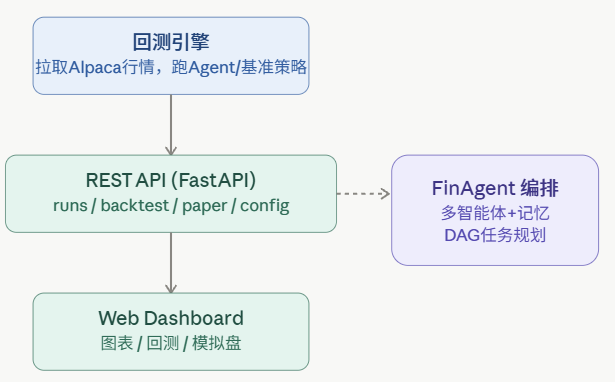
2. FINSABER (waylonli)
定位：KDD 2026 论文《Can LLM-based Financial Investing Strategies Outperform the Market in Long Run?》配套的批判性回测框架，本身不是"造智能体"而是"检验智能体"。
- 技术栈
：Backtrader（传统规则策略执行引擎）+ FinRL（强化学习基线）+ 自研 LLM 调用层；v2 版本转向 Parquet 数据湖（价格/新闻/财报三源数据，约 7.5GB）。 - 架构特点
： 双模式设计："BT 模式"直接复用 Backtrader 生态跑传统策略；"LLM 模式"支持多模态输入（新闻、监管文件）驱动的策略。 FINSABER-2 重构为"包式"架构：数据加载器、执行模型、指标计算、结果写入器、标的选择器、策略接口全部解耦，FinMem/FinAgent/FinCon/FinRL 等具体论文实现被剥离到核心包之外，只保留可复用回测基础设施。 采用滚动窗口（rolling-window）评测（2 年窗口、1 年步长，训练期最多用 3 年历史数据），刻意覆盖 20 年、100+ 标的，对抗"幸存者偏差"和"数据窥探偏差"。 - 创新点
：核心贡献不是新智能体，而是方法论批判——证明此前大量 LLM 交易智能体论文的"优势"在长周期、大样本下会显著衰减，且策略在牛市过度保守、熊市过度激进；为整个领域提供了更严格的评测基尺。
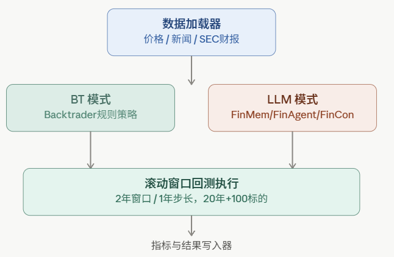
3. FinRobot (AI4Finance-Foundation)
定位：面向金融分析的开源 AI Agent 平台，AI4Finance 生态（与 FinGPT、FinRL、FinNLP 同源）的旗舰项目之一。
- 技术栈
：早期核心基于 AutoGen（多智能体对话框架）；新的 FinRobot Pro / FinRobot Desktop 模块则重构为 PydanticAI + FastAPI + React/Tauri 全栈桌面应用。 - 架构特点
： - 四层框架
：Financial AI Agents 层（市场预测/文档分析/交易策略智能体，引入 Financial Chain-of-Thought 提示）→ Financial LLMs Algorithms 层（领域微调模型）→ LLMOps/DataOps 层（多源模型选择）→ 多源基础模型层（即插即用）。 - 感知-大脑-行动（Perception-Brain-Action）
工作流：感知模块结构化市场/新闻/宏观数据；大脑模块用 LLM + Financial CoT 生成结构化指令；行动模块执行交易、调仓、生成报告或告警。 - 智能调度器（Smart Scheduler）
：由 Director Agent + Agent Registration + Agent Adaptor + Task Manager 组成，动态把任务分配给最合适的 LLM/微调模型，实现"模型多样性"下的最优任务-模型匹配。 新增 FinRobot Equity 模块用 8 个专职 Agent 生成机构级股票研究报告（DCF 估值、同业对比、15+ 图表）。 - 创新点
：早期即提出"感知-大脑-行动"的具身化类比架构和"金融思维链"提示范式；Smart Scheduler 把多模型编排做成系统级组件而非临时拼接；从纯研究工具演进为带 Web/Desktop 产品形态的完整链路（数据→分析→报告）。
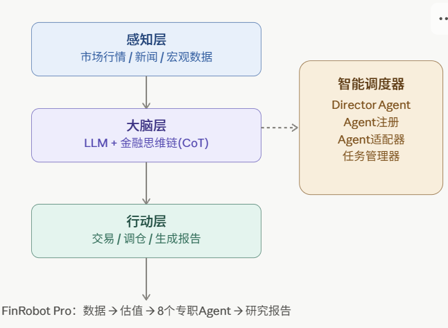
4. FundaPod (dgtql)
定位：面向基本面研究（而非交易信号生成）的多人格（Multi-Persona）智能体平台，论文明确区分"研究生产"与"交易决策"两类任务，主打人机协同（Human-AI Hybrid）。
- 架构特点（五层）
： Skill 分三种运行时类型：Deterministic（纯代码，可单测）、Hybrid（LLM + 结构化校验器）、Agent（工具调用+开放式推理）。 - 接口层
（Web/CLI/API 统一转为内部请求格式） - 任务规划与调度层
：将目标转成带类型的有向无环图（Typed DAG），按 Skill 声明的 needs/produces自动反向推导依赖，而非人工硬编码流程 - 推理层（Analyst Pod + Skill Registry）
：多个"人格蒸馏"出的分析师 Agent（价值投资者、宏观策略师、量化分析师……），彼此互不通信、独立推理 - 存储层
：Evidence Store（只追加的证据存证）+ Knowledge Graph（"第二大脑"，连接股票/备忘录/分析师/主题） - 数据源层
：SEC 文件、行情、新闻、纪要等，均通过确定性 Skill 摄入 - 核心创新——"独立优先于综合"（Independence before Synthesis）
：明确拒绝主流的"多智能体辩论收敛"范式（如 TradingAgents 的 debate loop），理由是信息级联理论（informational cascade）和实证研究显示辩论常常固化错误、制造虚假共识；转而让人格化 Agent 各自独立产出，分歧留给人类基金经理（PM）事后裁决，架构上类比 Millennium/Citadel 等"多经理人对冲基金"模式。 - 其他创新
：人格蒸馏四步流水线（提取→生成→规范化为 Skill Spec→打包为 Persona Pack），可将任何投资风格的公开材料（股东信、访谈）转成可部署 Agent；证据溯源模型——每条结论都可追溯到具体的原始证据文件，而非依赖不透明的向量检索；支持外部人格包适配器（如社区的 Buffett Skill）即插即用。
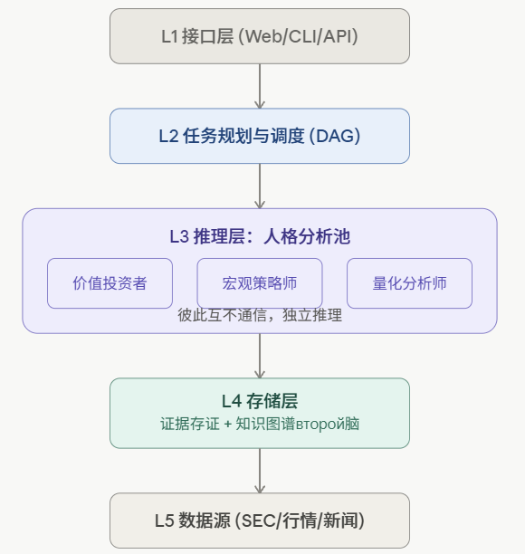
5. PrimoAgent (ivebotunac)
定位：轻量级多智能体股票分析系统，克罗地亚学者 Ive Botunac 学术论文《Implementacija višeagentnog sustava umjetne inteligencije...》的开源实现，姊妹项目 PrimoGPT 专注金融 RL+NLP。
- 技术栈
：LangGraph（有向状态图编排）+ yFinance/Finnhub（行情）+ Firecrawl（网页抓取）+ Perplexity（新闻检索增强）。 - 架构特点
：线性 LangGraph 工作流，四个 Agent 依次处理并增强共享状态：数据采集 Agent → 技术分析 Agent（SMA/RSI/MACD/布林带/ADX/CCI）→ 新闻情报 Agent（7个量化 NLP 特征）→ 投资组合管理 Agent（输出带置信度的交易信号）。 - 创新点
：架构极简、可复现性强（线性管道而非复杂图/辩论结构），把新闻情感提炼为 7 个结构化数值特征直接注入决策层，是"轻量但工程化扎实"的多智能体范例，更偏工程可用性而非追求复杂协同机制。
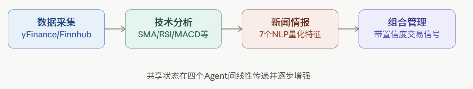
6. QuantEvolver (QuantLLM)
定位：自我进化的 LLM 因子挖掘框架，核心思路是用强化微调（RFT）替代传统"prompt 反复堆叠反馈"的挖掘范式。
- 技术栈
：自研 Factor DSL（语法/类型检查的可执行因子表达式）+ Backtrader（可选回测扩展）+ Verl/vLLM（强化微调训练栈，兼容 GRPO）。 - 架构特点
： Pipeline：场景精炼（LLM 把用户原始需求转成结构化 scenario config）→ 种子构建（生成/校验/打分/去重候选因子）→ 任务库构建（种子×评测窗口组合成 RFT 训练实例）→ 可执行评测（单标的与横截面因子回测）→ RFT 工具链（生成 Verl 兼容的 prompt 数据集与 token 级奖励张量）。 提供多种奖励画像（方向性、IC、RankIC、收益）。 - 创新点
：把"因子挖掘经验"从 prompt 上下文转化为策略更新信号——不是让 LLM 在每次调用时重新"读"一遍历史反馈（容易导致上下文爆炸、反馈漂移、依赖超大模型），而是通过强化微调把挖掘经验内化进模型权重，是从"提示工程"迈向"策略优化"的路线。
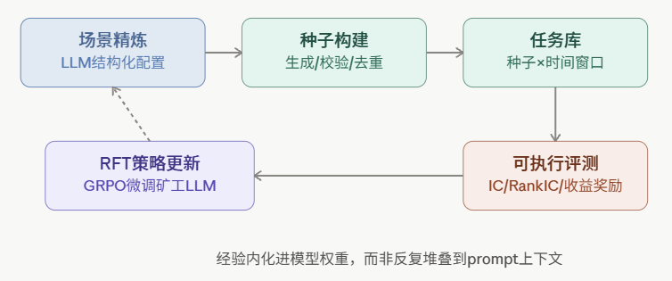
7. QuantaAlpha
定位：中国团队（成立于2025年）打造的 LLM + 进化策略结合的量化 Alpha 因子自动化发现系统，只需输入研究方向即可自动跑完"挖掘-进化-验证"全链路。
- 技术栈
：自研前端（frontend-v2，本地 Web UI）+ LLM API（示例中用 GPT-5.2）+ 因子库管理与独立回测模块。 - 架构特点
：**"研究方向 → 多样化规划 → 轨迹进化 → 已验证 Alpha 因子"**四段式流水线；系统设置、因子挖掘、因子库、独立回测四个功能面板均可视化操作，强调"自进化轨迹（self-evolving trajectories）"而非单轮生成。 - 创新点
：论文/README 展示了跨市场零样本迁移能力——在 CSI 300 上挖掘出的因子迁移到 CSI 500 取得约 40.3% 超额收益、迁移到 S&P 500 取得约 19.1% 超额收益；在 2023 年市场风格切换、传统基线集体失效的年份仍保持稳健的 IC/RankIC，显示其进化机制对 regime shift 有一定鲁棒性。
- QuantaAlpha
— 四段式挖掘-进化-验证流水线。
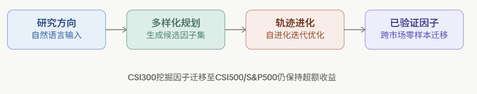
8. RD-Agent (microsoft)
定位：微软亚洲研究院出品的通用数据驱动 R&D 自动化智能体，金融（量化因子/模型挖掘）只是其众多应用场景之一（另有医疗等），在 MLE-Bench（75 个 Kaggle 竞赛任务）上取得 SOTA。
- 架构特点
：核心是 "Research + Development" 双组件自主框架： - Research
组件负责主动探索、生成新假设/想法； - Development
组件负责将想法转化为可执行实现； 二者通过迭代闭环持续进化，让"AI 驱动数据驱动的 AI（AI drives data-driven AI）"。 支持"多路径探索并融合（multi-trace exploration and fusion）"：面对复杂 ML 工程任务时并行探索多条假设路径，交换信息，最终做 trace fusion 而非单线性搜索。 支持跨模型角色分工：论文实验中用 o3 担任 Research Agent（发挥其创造性构思能力），GPT-4.1 担任 Development Agent（发挥其指令遵循能力），二者组合优于单模型方案。 - 创新点
：把 R&D 过程本身建模为"假设生成—实现—评估—再假设"的进化循环，并证明给不同能力特征的模型分配不同角色（构思 vs 落地）比让单一模型端到端做全部工作效果更好；在金融场景对接 Qlib，可自动挖掘因子/模型并持续迭代。
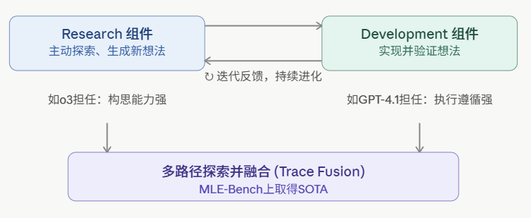
9. TradingAgents (TauricResearch)
定位：GitHub 星标近 9.4 万的现象级项目，模拟真实交易公司组织结构的多智能体交易框架，对应 arXiv 论文 2412.20138。
- 技术栈
：多 LLM Provider 支持（GPT-5.x / Gemini 3.x / Claude 4.x / Grok 4.x 及 OpenAI-compatible 本地服务如 vLLM/Ollama），纯 API 驱动、无需 GPU。 - 架构特点（分析师-研究员-交易员-风控四级结构）
： v0.2.x 起引入 llm.with_structured_output(Schema)使 Research Manager / Trader / Portfolio Manager 用类型化 Pydantic 输出（各 Provider 自动适配 json_schema/response_schema/tool-use/function-calling），并加入**持久化决策日志与"结果驱动的反思（outcome-grounded reflection）"**机制，让系统具备一定的经验积累能力。- Analyst 团队
：基本面/情绪/技术面/新闻等多路分析师并发产出报告； - Bull/Bear 研究员
：对同一标的**正反辩论（debate）**评估市场条件； - Trader
：综合辩论结果与历史数据做出交易决策； - Risk Management 团队
：多风险偏好角色监控敞口，形成最终风控意见。 - 创新点
：用"辩论"机制（Bull vs Bear）模拟真实交易台的分歧与共识形成过程，是目前该赛道最具代表性的"多角色协作+debate"范式（与 FundaPod 明确采取的"独立优先"路线形成鲜明对照）；工程上做到了模型无关、无 GPU 依赖、易替换 backbone，是社区可复现性和可扩展性最强的项目之一。
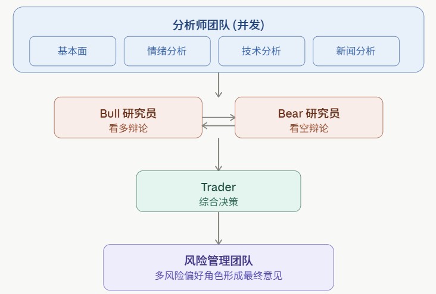
10. agno-investment-team (agno-agi)
定位：基于自研 Agno 智能体运行时打造的"投资委员会"示例应用，模拟真实投研团队用 7 位 AI 分析师管理一个虚拟 1000 万美元股票组合。
- 技术栈
：Agno（智能体运行时框架，提供 Agent/Team/Workflow/AgentOS 一套抽象）+ Google Gemini（3.1 Pro 作为委员会主席模型）+ Exa（网页搜索 MCP）+ YFinance。 - 架构特点
（本项目的最大特色是同一套 Agent 用 5 种不同编排架构演示）： 7 个角色化 Agent：市场分析师、财务分析师、技术分析师、风控官、知识 Agent（RAG检索历史备忘录）、备忘录撰写者、委员会主席（最终决策者）。 4 种 Team 编排模式并存：Coordinate（动态多智能体协同）、Route（单智能体分派）、Broadcast（并行独立评估）、Task（自主任务分解）。 另有 1 条固定 Workflow：市场分析 → 财务+技术并行 → 风控 → 备忘录 → 主席决策，是标准投研流水线的显式实现。 - 创新点
：不是单一架构，而是用同一批 Agent 展示多种编排范式的横向对比（协同/路由/广播/任务分解 vs 固定流水线），本质是对底层 Agno 框架能力的一次系统性 Showcase，工程上是"投研场景 + 多架构基准测试"的结合体。
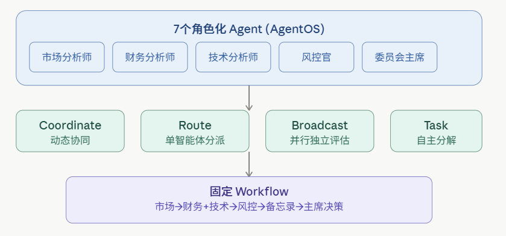
11. ai-berkshire (xbtlin)
定位：不是传统意义上的"独立运行的 Agent 系统"，而是一套面向 Claude Code / Codex 的投资研究 Skill 集合（近 4 周内 GitHub Trending 榜首，star 数破万），将巴菲特、芒格、段永平、李录四位价值投资大师的方法论结构化为可调用的 Skill。
- 技术栈
：纯 Claude Code Skills / Codex Skills 机制（Markdown 指令文件 + Python 工具脚本），无独立后端服务，运行在用户本地的编码 Agent 环境中。 - 架构特点
： 四套"大师人格"方法论被拆解为结构化 Skill（各自的估值框架、护城河判断标准、决策清单），通过 /investment-research等 slash 命令触发；- 多 Agent 对抗式并行研究
：让四位大师视角在同一标的上分别给出"通过/不通过/灰色地带"结论，刻意制造分歧（如"巴菲特说'真便宜'，李录说'不确定就不买'"）而非强行统一结论； 内置金融计算严谨性校验工具（ financial_rigor.py），用 PythonDecimal精确十进制而非浮点数计算市值等指标，并对关键数据做多源交叉验证，规避 LLM 心算误差（如港币/人民币单位混淆）。- 创新点
：把"Skill 化"作为核心架构范式而非重型多智能体系统，成本极低（依托现有 Claude Code/Codex 运行时）却能复现专业投研纪律；用强制结构化输出+多视角冲突呈现对抗"LLM 一问就给和稀泥式分析"的通病，且有真实资金（非模拟盘）业绩背书。
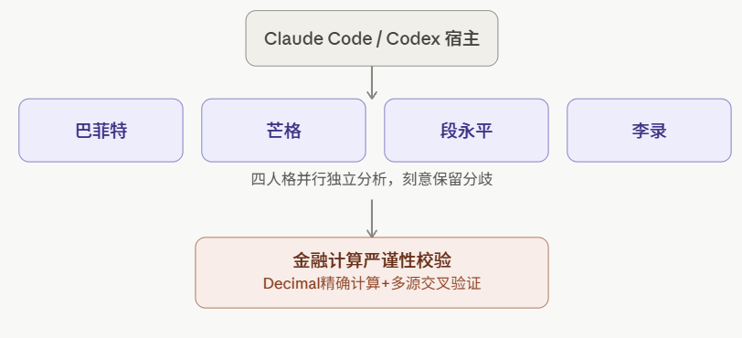
12. daily_stock_analysis (ZhuLinsen)
定位：面向个人投资者的**"零成本"自动化多市场股票日报系统**，GitHub star 超 5.6 万，覆盖 A股/港股/美股/日股/韩股/台股。
- 技术栈
：Python + 多数据源适配层（行情/K线/技术指标/新闻/公告/基本面）+ LLM 决策引擎 + FastAPI（Web/API 模式）+ Docker + GitHub Actions（定时任务，"零成本"运行的关键）。 - 架构特点
： Pipeline：多源行情/新闻抓取 → LLM 生成决策看板 → 多渠道推送（Telegram/Discord/Slack/Email/企业微信/飞书）。 支持本地 CLI（ --debug/--dry-run/--stocks/--schedule/--serve-only）、Docker（Web/API 模式 与 定时任务模式分离部署）、GitHub Actions 三种运行形态，且用户可自定义 Secrets/Variables 精细控制通知渠道与推送分组。明确定位为"姊妹项目矩阵"的一环：自身只做日报分析，选股筛选、策略回测验证、策略自进化留给独立的姊妹项目，未来计划做候选池导入、回测验证、报告交接等集成。 - 创新点
：核心创新不在算法而在**"零成本可持续运行"的工程设计**——利用 GitHub Actions 免费额度做定时调度，把 LLM 分析、多市场数据整合、多渠道通知打通成个人可长期免费自托管的产品化方案，是"轻量级但完整落地"的范例。
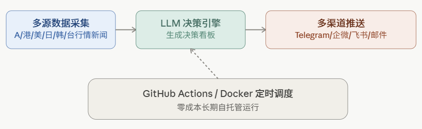
13. hermes-Financial (schnetzlerjoe)
定位：基于 LlamaIndex 的股票研究多智能体框架，定位为"给 AI 工程师的金融数据工具箱"，区别于面向终端用户的商业化 chatbot 产品（hermes-app 是其闭源上层应用）。
- 技术栈
：LlamaIndex（Agent 框架、工具封装、RAG 管线）+ edgartools（SEC EDGAR XBRL 结构化解析）+ httpx（异步请求 FRED/Yahoo Finance/SEC 全文检索）+ Excel/Word/PDF 输出生成器。 - 架构特点
： - 工具与 Agent 解耦
：所有数据工具模块（ hermes.tools.sec_edgar、hermes.tools.fred、hermes.tools.excel等）均可脱离 Agent 独立异步调用，用户既可以"直接调用工具"也可以"交给 Agent 自主编排"。 Agent 基类 HermesAgent（ABC）支持两种执行模式——FunctionAgent（工具调用，默认）与 ReActAgent（链式推理，仅在需要显式推理链时使用），通过 Registry 按名称+标签注册。覆盖从**数据获取→文档摄取→报告生成（Excel 模型、Word/PDF 报告）**的完整产出闭环，而非仅停留在"分析文本"层面。 - 创新点
：以"框架"而非"应用"自居，强调开发者可以只取工具层、只取 Agent 层，或整体使用的高度模块化设计；对 SEC XBRL 数据做了深度结构化解析（公司事实、内部人交易、机构持仓等），并原生支持生成可直接使用的 Excel 模型和 PDF/Word 研究报告，弥补了很多同类项目"只出文本分析、不产出专业格式产物"的短板。
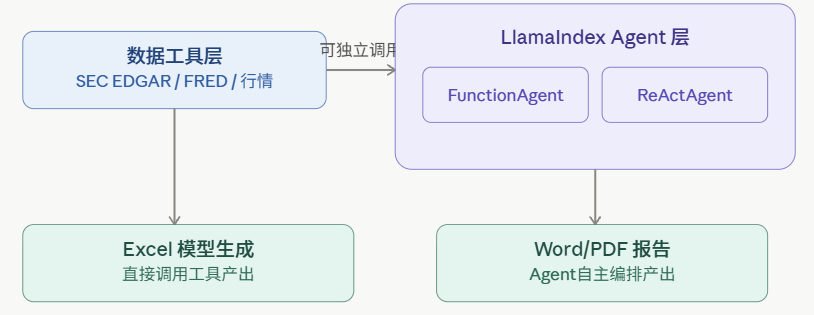
14. quant-trade (colinsweany)
定位：个人多资产量化研究团队"插件"，覆盖加密货币、A股、港股、美股，核心特色是把量化研究能力做成 Hermes Agent（NousResearch 开源自我进化 Agent）的插件生态。
- 技术栈
：Python 插件体系（ plugins/quant_tools/，29 个模块、85 个工具、约 1.4 万行代码），自研回测引擎（非直接套用 Backtrader）+ ECharts（暗色主题可视化 HTML 报告）。 - 架构特点
： - 阶段 A：自研事件驱动回测引擎
—— data_loader（Parquet 缓存）、portfolio（含资金费率结算apply_funding()）、event_loop（主循环）、metrics（Sharpe/Sortino/MaxDD/Calmar/盈亏比）、walk_forward（滚动窗口样本外验证）、risk_filter（Python 硬风控过滤器）； - 阶段 B：因子实验室（Factor Lab）
——36+ 内置因子（动量、波动率、微观结构如资金费率 z-score、持仓量变化等）、 validator.py做 IC/IR/分层回测/半衰期分析； 以自然语言对话方式驱动（"帮我用 MA 交叉策略回测 BTC/USDT"），后台自动调用对应插件工具并生成结构化结果+HTML 报告。 - 创新点
：不是独立 Agent 应用，而是把完整的量化研究基础设施（回测引擎+因子实验室）封装为通用 Agent 平台（Hermes）的插件包，让"自然语言驱动量化研究"这件事可以复用已有的通用 Agent 生态，而非重复造一个专用聊天界面；资金费率结算、微观结构因子等设计体现出对加密货币永续合约特性的针对性建模。
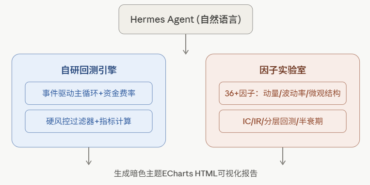
15. zhengxi-views (lycsqq / lyra81604)
定位：一个高度垂直化的"可溯源单一基金经理投研 Skill"——把易方达基金经理郑希 2012–2026 年全部公开观点原文、方法论、真实基金持仓数据打包为一个 Agent Skill，强调"绝不杜撰"。
- 技术栈
：纯 Skill/Markdown + 结构化语料库（无独立推理引擎，依托 Claude / 腾讯 WorkBuddy 等宿主 Agent 运行）， skill.yml为腾讯 WorkBuddy 专用清单。 - 架构特点
： 语料分层组织： references/method.md（方法论提炼）、references/scorecard.md（打分卡框架）、corpus_index.json（原文索引）、corpus/（定期报告、基金经理手记、媒体报道原文）、fund_data/（8 只在管/曾任基金的季度持仓与净值业绩规模真实数据）。支持接入 MCP 生态构建交易日自动化研究助手：定时触发 → 采集行情/持仓/财报/产业新闻 → 结合郑希方法论生成结构化研究报告 → 通过邮件等 MCP 推送。 - 创新点
：极致的溯源约束（Traceability-first）——所有回答必须能对应到原始语料的具体出处，拒绝生成式"脑补"，这与 FundaPod 的"证据溯源模型"理念相通，但做到了单一人格的极致垂直化和数据真实性（真实持仓/净值数据而非模拟）；证明了"人格化投研 Skill"这一路线不需要复杂框架，用结构化语料+严格提示约束即可实现，是这批项目中架构最"轻"但溯源约束最"重"的一个。
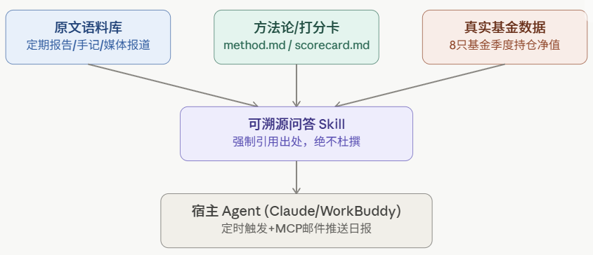
| TradingAgents | ||
| FundaPod | ||
| RD-Agent | ||
| QuantEvolver |
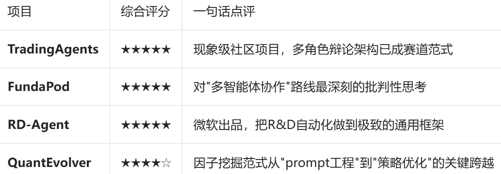
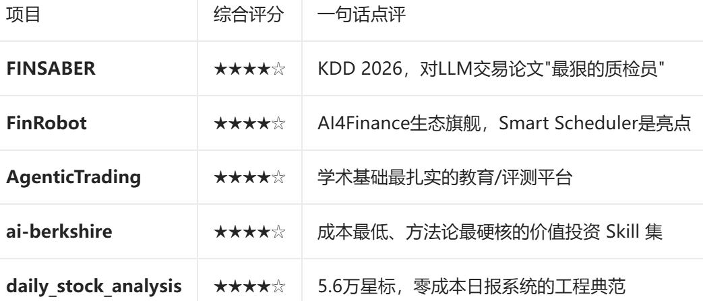
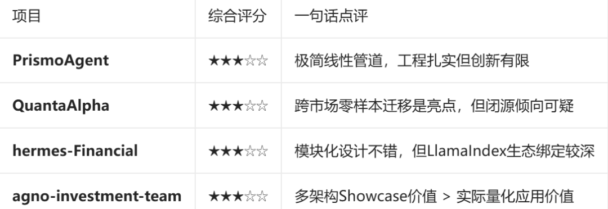
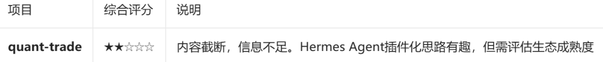
AgenticTrading: https://github.com/Open-Finance-Lab/AgenticTrading.git
FINSABER: https://github.com/waylonli/FINSABER
FinRobot: https://github.com/AI4Finance-Foundation/FinRobot.git
FundaPod: https://github.com/dgtql/FundaPod.git
PrimoAgent: https://github.com/ivebotunac/PrimoAgent.git
QuantEvolver: https://github.com/QuantLLM/QuantEvolver
QuantaAlpha: https://github.com/QuantaAlpha/QuantaAlpha.git
RD-Agent: https://github.com/microsoft/RD-Agent
TradingAgents: https://github.com/TauricResearch/TradingAgents.git
agno-investment-team: https://github.com/agno-agi/investment-team.git
ai-berkshire: https://github.com/xbtlin/ai-berkshire.git
daily_stock_analysis: https://github.com/ZhuLinsen/daily_stock_analysis.git
hermes-Financial: https://github.com/schnetzlerjoe/hermes.git
quant-trade: https://github.com/colinsweany/quant-trade
zhengxi-views: https://github.com/lycsqq/zhengxi-views